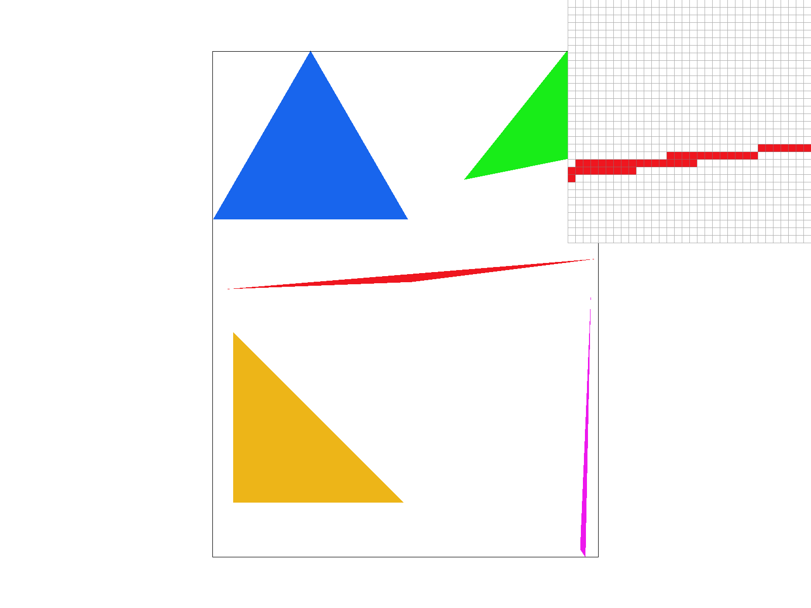
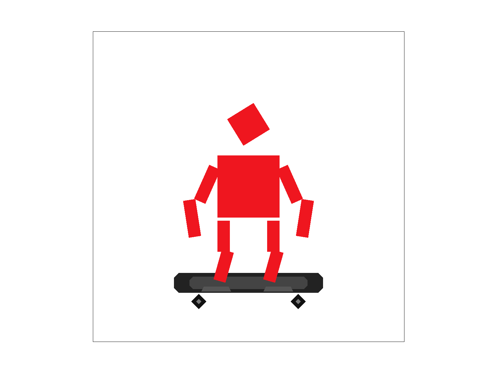

CS184/284A Spring 2026 Homework 1 Write-Up
Names: Patrick (Tsung-Han) Wu
Link to webpage: https://cal-cs184-student.github.io/hw-webpages-tsunghan-wu/hw1/index.html
Link to GitHub repository: https://github.com/cal-cs184-student/hw1-rasterizer-tomay
Overview
This assignment asked us to write a simple rasterizer using C++. The first two tasks focused on basic triangle rasterization with superpixel anti-aliasing. The third task was implementing three simple 2D transformation matrices. Task 4 asked us to implement barycentric coordinates, which I found tricky because we need to handle edge cases carefully; otherwise we can end up with white strips on the image. The final two tasks (Tasks 5–6) then asked us to implement texture mapping. Overall, through building these pieces end-to-end, I learned how the rasterization pipeline actually work (compared to only reading slides), and how small implementation details (like sampling and edge handling) can noticeably affect the final rendered result.Task 1: Drawing Single-Color Triangles
In this task, we implemented a basic triangle rasterization routine. Invoid RasterizerImp::rasterize_triangle, we first compute the triangle’s bounding box (a rectangle that covers the triangle). Then, for each point inside that region, we perform the three-line inside-triangle test (ref: Lecture 2 slides). We structured this logic using two helper functions: is_inside_check and check_line.
One important detail is the homework requirement that points on the triangle edges should be treated as inside the triangle. To handle this, we used the following condition:
if (line0_dot >= 0 && line1_dot >= 0 && line2_dot >= 0) {
return 1;
}basic/test.svg renders successfully (a), but when zooming in, artifacts are visible because we are not yet using superpixels for anti-aliasing (b). We address this issue in the next task.

|

|
Task 2: Antialiasing by Supersampling
We then implemented supersampling to mitigate the artifact we mentioned above. There are two main parts we need to modify in the code: (1) We need to make the buffer size fromH*W to H*W*sample_rate; the modifications include the constructor (RasterizerImp), fill_pixel, set_sample_rate, set_framebuffer_target. (2) Then, the main function for supersampling is inside the rasterize_triangle function without a lot of tricks: it's just another for loop going through all grids inside a single pixel, and then in resolve_to_framebuffer, we average the value over all grids inside a single pixel so we will show blurred results there. The results of four different sample rates on the triangle is shown below. It's obvious that supersampling does mitigate the sharp boundary artifact.
|

|
|
|
|
|
Task 3: Transforms
In this task, we implemented the homogeneous 3x3 matrices for translation, rotation, and scaling, following the formulas we learned in Lecture 4. With these transforms in place, we can successfully renderrobot.svg. After that, I played with the SVG by adding a skateboard (with two wheels) using extra polygons, and then applying additional rotate/translate transforms to the arms and legs so the robot can stay balanced on the skateboard. The default robot (a) and my updated robot (b, SVG file in the docs/ directory) are shown below:

|

|
Task 4: Barycentric coordinates
To implement this task, I reused the same structure as triangle rasterization: compute a bounding box for the triangle, iterate over pixels (and sub-pixel samples when supersampling is enabled), and then determine whether each point lies inside the triangle or not. For samples that are inside, I compute barycentric weights using an area/edge-function form (solving forα and β, then γ = 1 - α - β). The detailed formula is in the lecture slide. Finally, I interpolate the color by weighting the three vertex colors. It is worth mentioning that I added a small eps term in the barycentric denominators to reduce numerical instability near edges (e.g., when the denominator is extremely small due to floating point precision). This helps make the interpolation more stable at boundaries. Below is the requested screenshot of svg/basic/test7.svg with default viewing parameters and sample_rate = 1.